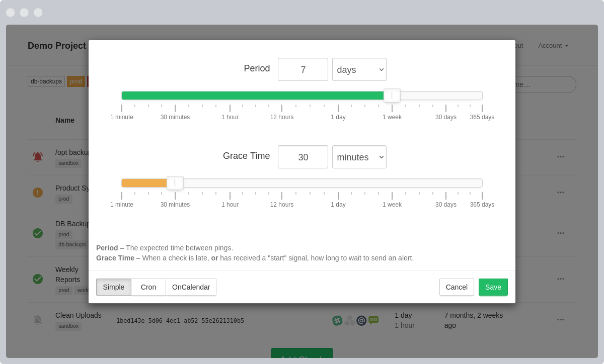

мониторинг заданий Cron
Мы уведомляем вас, когда ваши ночные резервные копии, еженедельные отчеты, задания cron и запланированные задачи не выполняются вовремя.
Бесплатно отслеживайте 20 заданий cron . Кредитная карта не требуется.
ssl renewalupdate metricsprod backup
Коротко о том, что внутри:
Панель управления с обновлением в режиме реального времени
Список ваших проверок, по одной для каждого задания Cron, демона или запланированной задачи, которую вы хотите отслеживать.
Дайте имена и присвойте теги своим чекам, чтобы их можно было легко узнать позже.
Нажимайте на значки интеграции, чтобы включать и выключать их.
Настройте период и время отсрочки в соответствии с периодичностью и продолжительностью ваших задач.

Простая конфигурация
Каждая проверка имеет настраиваемые параметры периода и времени отсрочки . В зависимости от этих параметров и времени с момента последнего пинга проверка находится в одном из следующих состояний:
|
Новый. Проверка, которая была создана, но еще не получила никаких пингов. | |
|
Вверх. Время с момента последнего пинга не превысило Period . | |
|
Поздно. Время, прошедшее с момента последнего пинг-запроса, превысило Period , но еще не превысило Period + Grace . | |
|
Вниз. Время, прошедшее с момента последнего пинг-запроса, превысило Period + Grace . Когда состояние проверки меняется с «Поздно» на «Вниз», Healthchecks.io отправляет вам уведомление. |
Поддержка выражений Cron
Альтернативно вы можете определить ожидаемую дату и время проверки связи, используя выражение cron. См. памятку по синтаксису Cron , чтобы узнать о поддерживаемых функциях синтаксиса.
Время отсрочки определяет, насколько «поздним» может быть пинг, прежде чем вы получите предупреждение. Вам следует установить его немного выше ожидаемой продолжительности вашего задания cron.
Подробности и журнал событий
К каждой проверке можно добавить более длинное описание в произвольной форме. Оставляйте заметки и подсказки для себя и своей команды.
Вы также можете просмотреть журнал полученных пингов и отправленных уведомлений «Down».
Значки общественного статуса
Healthchecks.io предоставляет значки статуса для каждого использованного вами тега. Кроме того, значок «Healthchecks.io» показывает общий статус всех проверок в вашей учетной записи.
У значков есть общедоступные, но трудно угадываемые URL-адреса. Вы можете использовать их в своих файлах README, информационных панелях или страницах состояния.
Интеграции
Настройте несколько способов получения уведомлений:
Электронная почта
Вебхуки
Дискорд
-чат
Push-уведомления Gotify
LINE Уведомить
в чате
Матричный
чат

Чат Microsoft Teams
ntfy
Push-уведомления
Управление инцидентами Opsgenie
Управление инцидентами PagerDuty
Управление инцидентами PagerTree
Телефонный звонок
Push-уведомления Pushbullet
Сигнальный
чат
SMS
Spike.sh
Управление инцидентами
Управление проектами Trello
Управление инцидентами по вызову Splunk
WhatsApp
Чат
Зулип
Чат
Что я могу отслеживать с помощью Healthchecks.io?
Крон Джобс
Мониторинг Healthchecks.io идеально подходит для мониторинга заданий cron ( см. руководство ) и cron-подобных систем: таймеров systemd, заданий сборки Jenkins, запланированных задач Windows, wp-cron, рабочих процессов Github, Kubernetes CronJobs, планировщика Heroku, конвейеров данных. Неудачное задание cron часто не имеет немедленных видимых последствий и может оставаться незамеченным в течение длительного времени.
Конкретные примеры:
Процессы, Сервисы, Серверы
Вы можете использовать Healthchecks.io для облегченного мониторинга сервера: убедиться, что конкретная системная служба или весь сервер живы и работоспособны. Напишите сценарий оболочки, который проверяет определенное условие и в случае успеха отправляет запрос Healthchecks.io. Регулярно запускайте сценарий оболочки.
Конкретные примеры:
Помощь тысячам разработчиков и команд в предотвращении скрытых сбоев